<!DOCTYPE html>
<html lang="pt-BR">
    <head>
        <meta charset="UTF-8">
        <title>Aula de Flexbox</title>
        <link rel="stylesheet" href="css/style.css">
    </head>
</html>
<body>
    <header>
        <section id="titulo-header">
            <small class="texto-pequeno">Aprenda criando</small>
            <p>Hello Kitty and Friends</p>
        </section>
        <section id="menu-header">
            <a href="index.html">Início</a>
            <a href="">Hello Kitty</a>
            <a href="curiosidades.html">Curiosidades</a>
        </section>
    </header>
    <main>
        <section id="hero">
            <section id="texto-hero">
                <small class="texto-pequeno">A vida é mais doce quando temos bons amigos por perto.</small>
                <h1>Conheça Hello Kitty e seus amigos!</h1>
                <p class="conheca">A Hello Kitty tem um grupo de amigos muito fiéis e adoráveis. Eles vivem em Londres e compartilham momentos cheios de diversão e companheirismo.</p>
            </section>
            <section id="img-hero">
                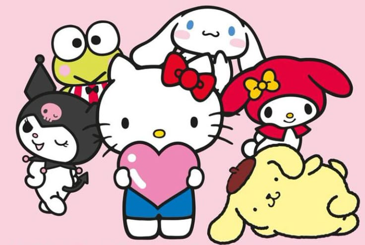
            </section>
        </section>
        <section id="galeria">
            <section id="galeria-texto">
                <small class="texto-pequeno">Conheça cada amigo</small>
                <h2>Amigos destaque</h2>
            </section>
        </section>
        <section id="galeria-imgs">
            <section class="card">
                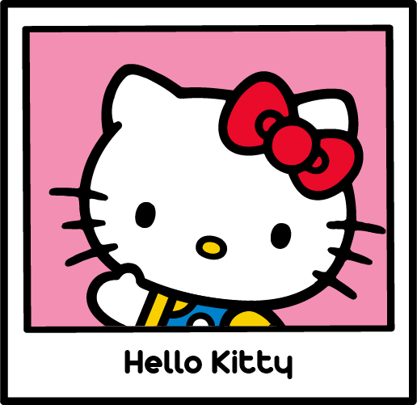
                <span>Uma garotinha alegre e de bom coração. Ela adora assar biscoitos, colecionar coisas fofas e viajar. Mede o equivalente a cinco maçãs e pesa o equivalente a três.</span>
            </section>
            <section class="card">
                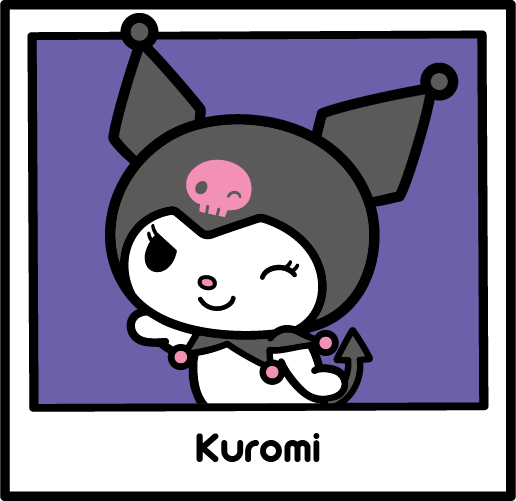
                <span>A líder de uma gangue de motociclistas (de triciclo) que usa um capuz preto com uma caveira rosa. Embora pareça rebelde e durona, ela é secretamente muito romântica e adora escrever em seu diário.</span>
            </section>
            <section class="card">
                
                <span>Uma coelhinha doce, honesta e muito amiga. Ela usa um capuz rosa que sua avó costurou para ela e tem como comida favorita biscoitos de amêndoa.</span>
            </section>
            <section class="card">
                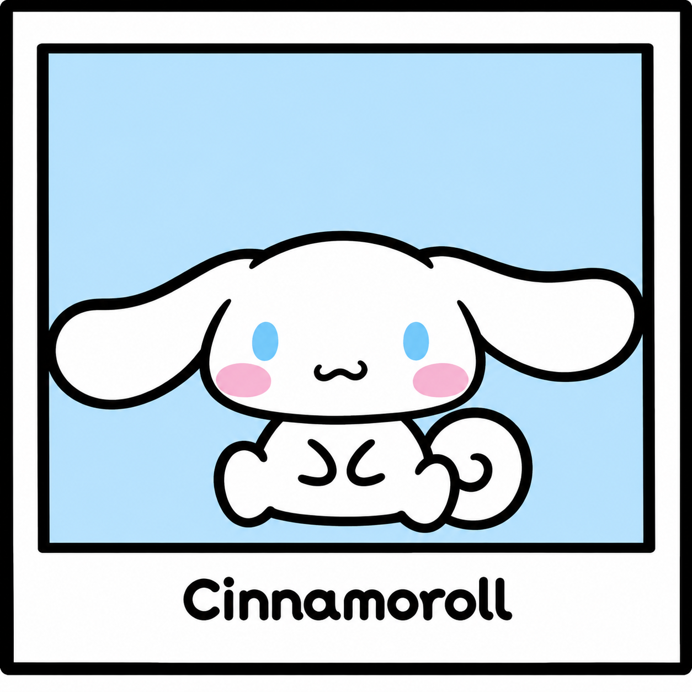
                <span>Um cachorrinho branco e tímido que nasceu nas nuvens. Ele voa batendo suas longas orelhas e trabalha como mascote do Café Cinnamon. Sua cauda é enroladinha como um rolo de canela.</span>
            </section>
            <section class="card">
                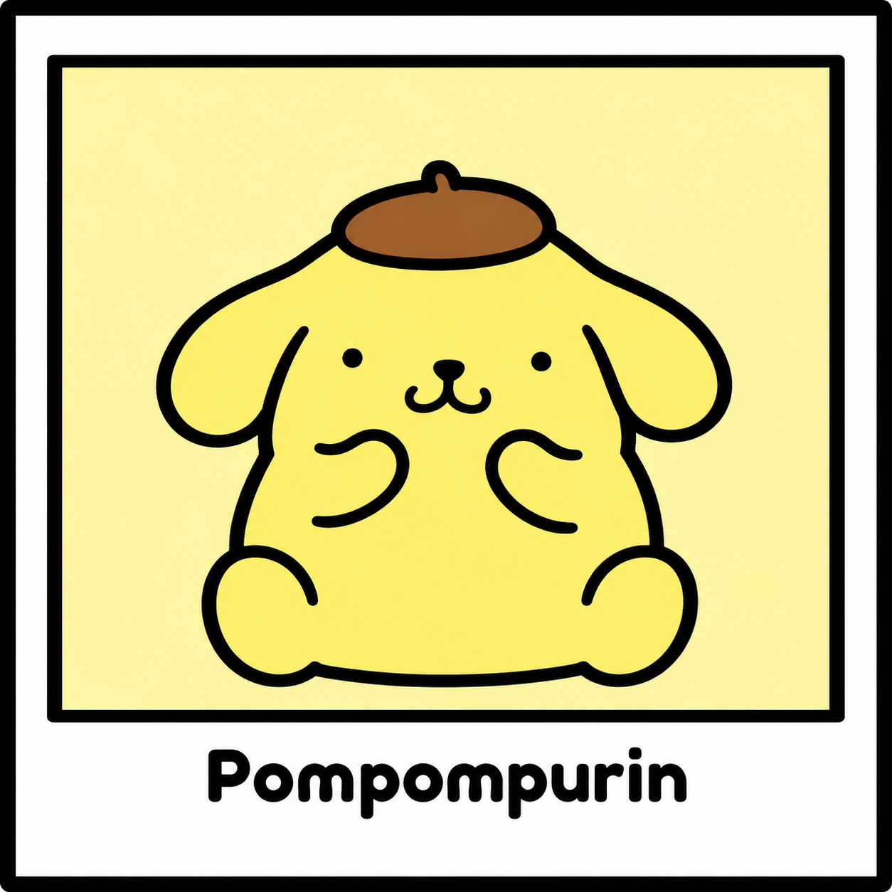
                <span>Um cãozinho Golden Retriever muito tranquilo que adora colecionar sapatos e tirar cochilos. Ele sempre usa sua icônica boina marrom e ama o pudim feito por sua mãe.</span>
            </section>
            <section class="card">
                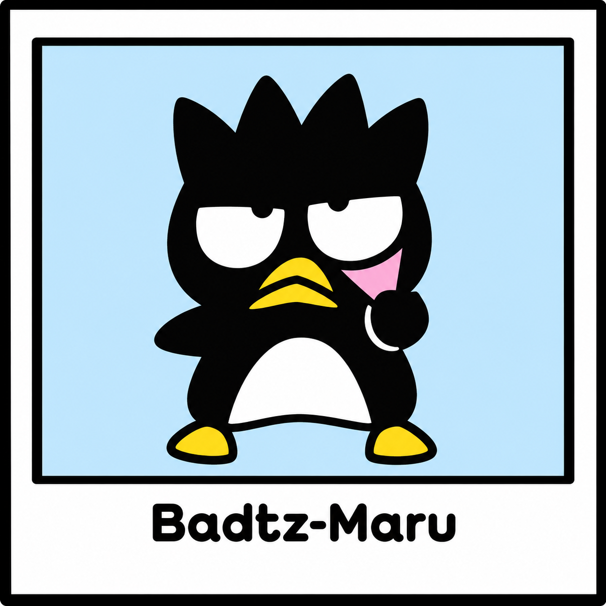
                <span>Um pinguim rebelde, sarcástico e cheio de atitude. Ele adora tocar guitarra, se gabar e tem um jacaré de estimação chamado Pochi. Seu sonho é se tornar o "grande chefe" de tudo.</span>
            </section>
            <section class="card">
                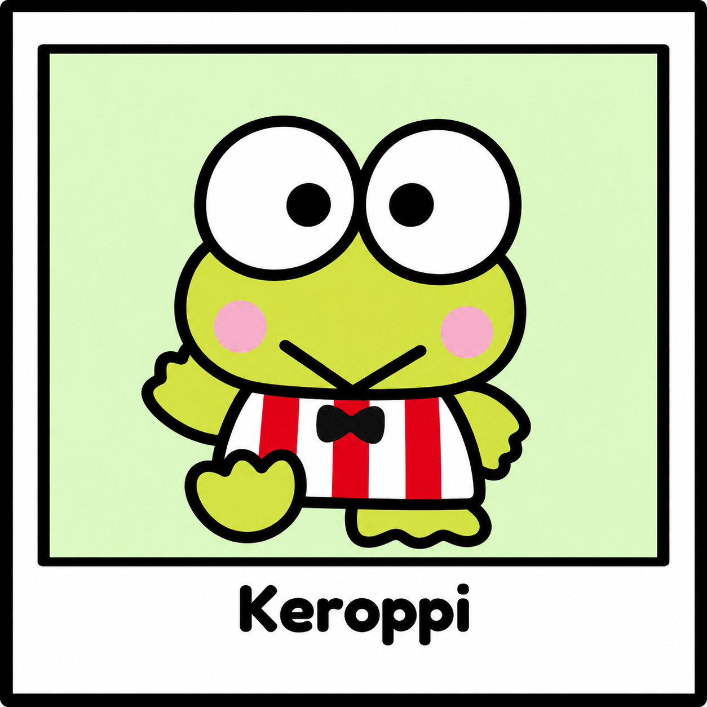
                <span>Um sapinho enérgico e otimista que vive na Lagoa Donut. Ele é um ótimo nadador, adora praticar esportes (especialmente beisebol) e cantar.</span>
            </section>
            <section class="card">
                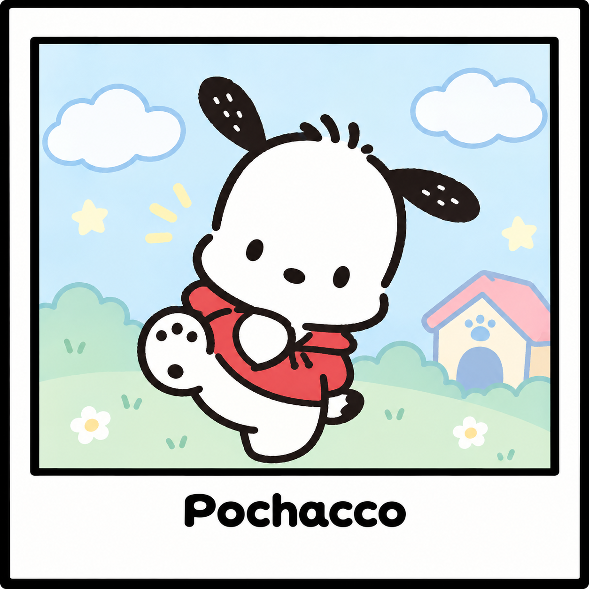
                <span>Um cãozinho curioso, desajeitado e muito esportivo. Ele adora caminhar, andar de skate e comer sorvete de banana, sendo frequentemente visto vestido com roupas atléticas.</span>
            </section>
            <section class="card">
                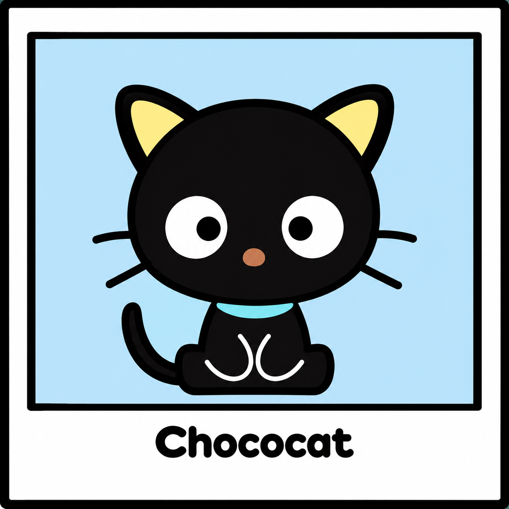
                <span>Um gatinho preto de olhos grandes e fofos que usa uma coleira azul. Ele é muito antenado e inteligente, usando seus bigodes como antenas para captar as últimas novidades e fofocas.</span>
            </section>
            <section class="card">
                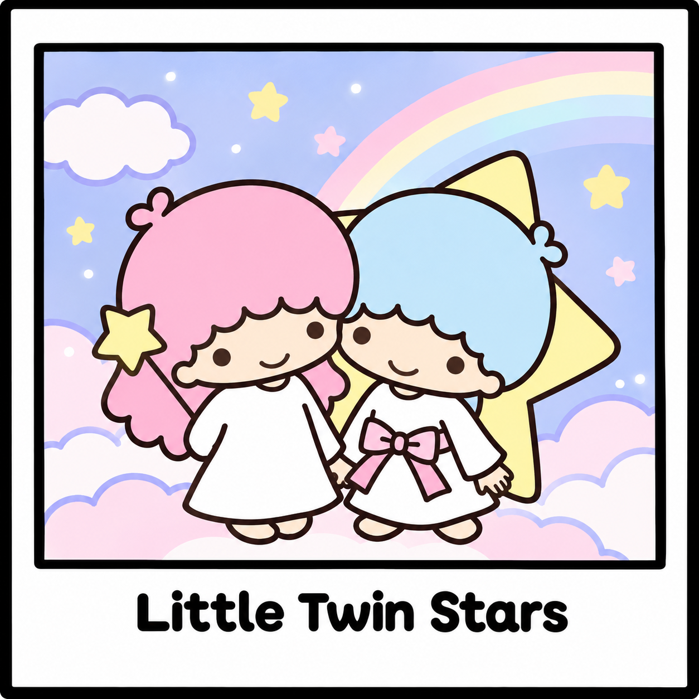
                <span>Dois irmãos gêmeos que nasceram na Estrela da Compaixão. Lala (de cabelo rosa) adora escrever poemas e cozinhar, enquanto Kiki (de cabelo azul) é muito curioso e adora inventar coisas e voar com a grande estrela em suas costas.</span>
            </section>
            <section class="card">
                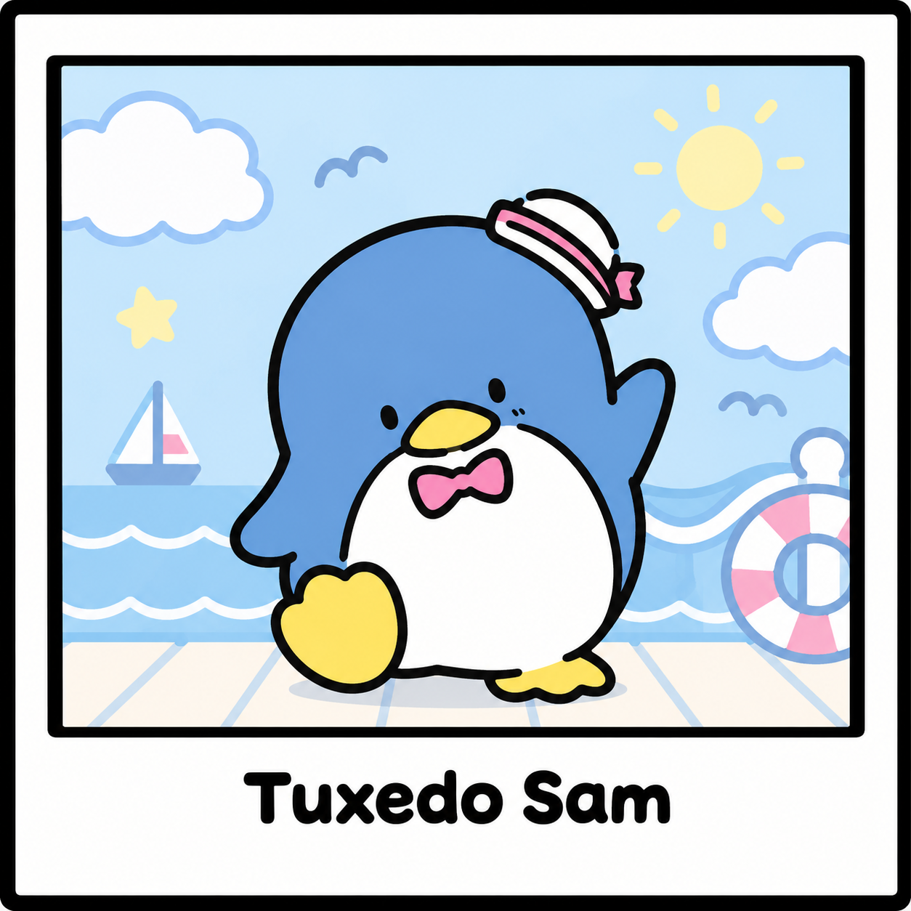
                <span>Um pinguim azul muito sofisticado e cavalheiro que veio da Antártida. Ele é fluente em inglês, adora comer e possui uma coleção de mais de 365 gravatas-borboleta.</span>
            </section>
            <section class="card">
                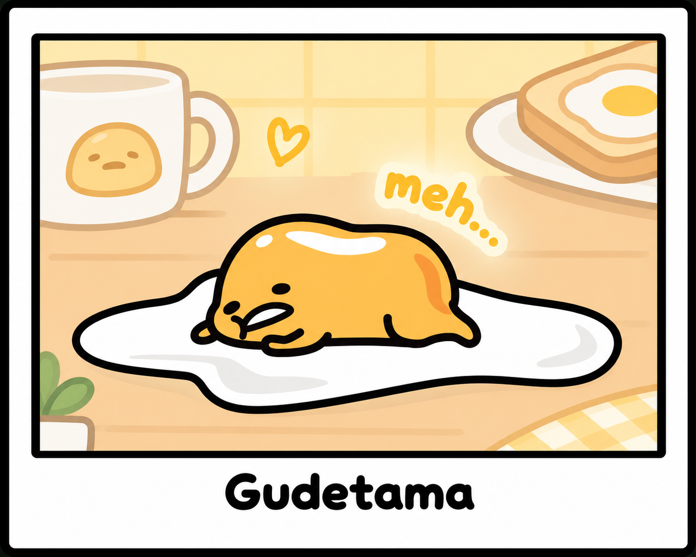
                <span>Um ovo preguiçoso e desmotivado que reflete a falta de energia moderna. Ele passa o dia resmungando, deitando em sua clara ou se cobrindo com um pedaço de bacon, sempre cansado do mundo.</span>
            </section>
        </section>
        <section id="footer">
                    <p><hr>Nome: Pamela Carvalho</p>
                    <p>Turma: 2TDS</p>
                    <p>Ano: 2026</p>
        </section>
    </main>
</body>
